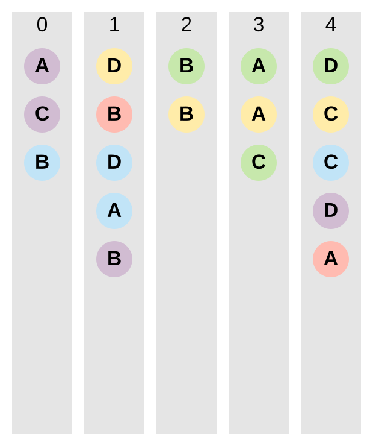
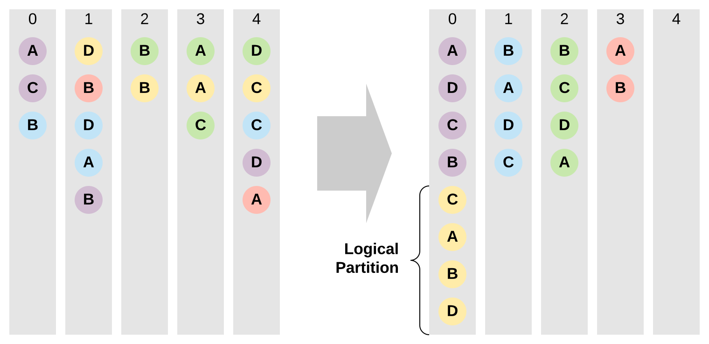

Partitioning¶
It’s one of the most important concepts in Fugue. And it is slightly different from Spark’s partition concept, so be careful. And this is also the most difficult Fugue concept to understand. We will go through a couple of examples, then go through the theory
Visualizing Partitions¶
Assume we have a collection of colored balls with letters, they are stored in 5 buckets (gray bars).

Now we are going to repartition these balls in different ways
Hash Partition: num=4¶
Hash partition means we calculate a hash code according to the color and letter and put into the correspondent bucket. num=4 means we want to use only bucket 0 1 2 3, and bucket 4 will be empty

Rand Partition: num=4¶
Rand partition means we assign a random code to a ball and put into the correspondent bucket. It’s like reshuffle. The number of balls in each bucket should be similar, but not perfectly even. As you can see the following bucket 0 has 2 more balls than others.

Even Partition: num=4¶
Now I want to enforce evenness. So, I use even partition, it guarantees the biggest and smallest buckets have at most 1 ball difference.

Hash Partition: by color¶
Now instead of giving a number, I specify partitioning by color. Each ball is assigned with a hash code by color. A main difference between Fugue and Spark is that, after partitioning by color, in each bucket, the balls are also sorted by color.
Ans after sorting, we will see same colors are in chunks, we call each chunk a logical partition

(Spark) Hash Partition: by color¶
In Spark, after partitioning by color, the balls in each bucket are not sorted.

Hash Partition: by color, presort letter¶
In addition to partitioning, we also want to sort by letter. In Fugue, after partition-by, a sort will always happen, so when you specify a presort, it’s just adding a key for the sort, so it doesn’t add much overhead to the process. With presort, it’s even faster than pandas udf in certain cases. (Fugue also supports pandas udf)

Rand Partition: by color¶
In Fugue, there is no rand partition by color, it will become a hash partition by color
Even Partition: by color¶
Hash partition by color can’t guarantee a single bucket contains a single color of balls. Even partition by color can guarantee that.

Even Partition: by color, num=4¶
When you also specify a number in even partition by, it guarantees max(colors in a bucket)-min(colors in a bucket)<=1. When you have more than tens of thousands of colors, you should consider using num

Theory¶
We will use the examples above the explain the theories.
Physical vs Logical Partitions¶
One physical partition (one bucket in the above examples) is a subset of data that will be moved onto one machine and be processed by one worker thread. Notice one worker thread can still process multiple physical partitions, but one physical partition can only be processed by one thread (unless the process failed, and it may retry on another worker thread on another machine). Notice in one worker thread, the code can still use multi-thread, it’s two different concepts.
One logical partition (same color balls, after sort, in one bucket) is always inside one physical partition. One physical partition can contain multiple logical partitions, but one logical partition will guarantee to appear in only one physical partition. When logical partition is not defined, we use the physical partition as the logical partition.
Fugue mainly focuses on the logical partition level, but you can also have custom handlers on physical level. For example, if it’s to process every logical partition, you need the same expensive initialization, then you can move this to the physical level handler, which can save significant amount of time. (on_init in this example
There are 4 major components of the partition concept in Fugue.
Number Of Partitions¶
It specifies at most how many physical partitions (buckets) for all rows.
If you only specify number of partitions, it indicates you want to reshuffle the data to number of partitions so in the next step you can process them with controlled concurrency. Notice that Spark has more granular concepts, repartition and coalesce, you can read this great article for details.
In current Fugue SparkExecutionEngine, we only use repartition because we notice that reshuffle is no longer bad in Spark. It performs extremely well in most cases, and data with reshuffle is a lot more balanced than coalesce without noticeable overhead. The advantage of repartition has been proven with numerous production use cases. Plus coalesce seems to be more inclined to push-down, causing a lot of hard-to-find performance issues. To avoid confusion and inconsistency, we only use repartition in SparkExecutionEngine. You can inherit from built-in SparkExecutionEngine and change to use coalesce if you feel that is useful to you.
All Fugue ExecutionEngine follows this rule of number of partitions:
<=0 means I don’t want to repartition to current dataframe with an explicit number. The ExecutionEngine can decide whether to do nothing or reshuffle to new buckets.
==1 means I want all data to move to a single physical partition
>1 means I want to reshuffle the data to the number of physical partitions
The underlying computing frameworks may have inconsistent behaviors on this (you have to be careful if moving away from Fugue), but on Fugue ExecutionEngine level, they are always consistent.
Partition Keys¶
It specifies the keys to partition on. It is to define the logical partitions. All items with a same set of keys will be moved to a single physical location to process and partition keys is to tell the framework within this physical partition, I will separate the data by certain keys and process them separately.
Presort¶
In each physical partition, to figure out the logical partitions, Fugue will sort first. And after you get the logical partitions, you may also need to sort inside that partition on some other keys before process. By specifying presort you only add additional keys to the first sort. presort must not overlap with partition keys, and you can also specify whether to sort ascending or descending.
Using pandas udf on SparkExecutionEngine is an exception, the engine does not sort on physical partition, and presort step will happen inside each logical partition. The outcome is the same.
Partition Algorithms (Hint)¶
Notice this is a hint, it does not require every ExecutionEngine to strictly follow. Currently only SparkExecutionEngine supports it. It has no effect on other engines.
Currently 3 algos are supported: HASH (default), RAND, EVEN.
No algo is good for everything, you need to use accordingly. The examples above have explained their differences. Here is a summary of pros and cons of each algo
. |
|
|
|
|---|---|---|---|
Speed |
fast (map, shuffle) |
fast (map, shuffle) |
slow (map, reduce, map, shuffle) |
Space |
low |
low |
high (need cache the dataframe first) |
Deterministic |
yes |
no |
yes |
Eveness (small data) |
bad |
random |
perfect (strict eveness) |
Eveness (big data) |
good |
good |
perfect (but worth it?) |
For large number of rows or for large number of partitions (when partition by keys is used), both HASH and RAND will generate even partitions, you may not need EVEN. But for small dataframe where each row/partition is expensive to process, EVEN will guarantee the perfect load balance.
For example, you have a dataframe with 100 rows, it takes 1 hour to process each row, and you have 100 cores, if using HASH or RAND partition, you may get physical partitions with more than 1 row, for example you get 99 partitions, only 1 partition cotains 2 rows, but the whole process will still take 2 hours. But using EVEN you can reduce it to 1 hour.
EVEN is the best for small size but expensive computations.
PartitionSpec in Fugue¶
Here are examples to initialize PartitionSpec in Fugue. It’s a widely used data structure
from fugue import PartitionSpec
assert PartitionSpec().empty # empty partition spec means no operation needed, it can be the default value
PartitionSpec(num=4)
PartitionSpec(algo="even",num=4,by=["a","b"],presort="c,d desc") # c,d desc == c asc, d desc
# you can use expression in num, ROWCOUNT can be used to indicate using the row count of the dataframe to operate on
# if a df has 1000 rows, this means I want to even partition it to 10 rows per partition
PartitionSpec(algo="even",num="ROWCOUNT/10")
PartitionSpec(num='ROWCOUNT/10', by=[], presort='')